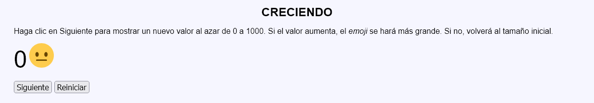
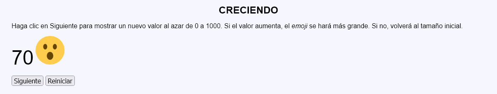
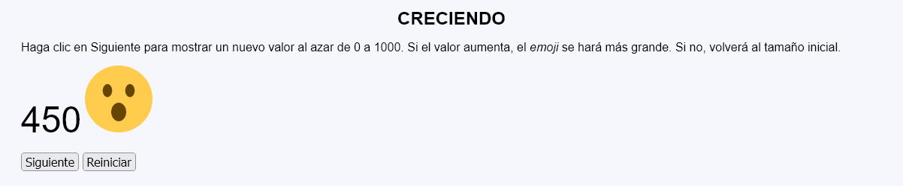
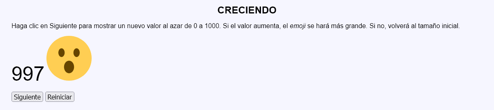
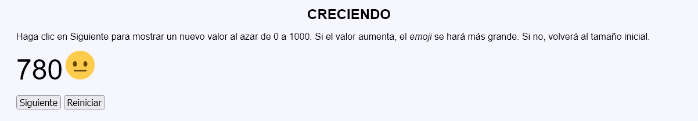
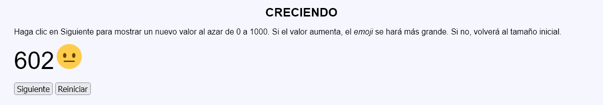

Creciendo - Comentarios
- Descripción del programa:
- La página muestra un valor numérico entre 0 y 1000, al azar y un dibujo de un emoji:
 o
o  .
. - Al abrir por primera vez la página o al reiniciar el juego haciendo clic en el botón Reiniciar, se muestra el valor 0 y la cara neutra con una altura 50.
- Al hacer clic en el botón Siguiente, se muestra un nuevo número:
- Si el valor es mayor que el anterior, se muestra la cara con la boca abierta, aumentando su altura en 20 (70, 90, etc.).
- Si el valor es menor que el anterior, se muestra la cara neutra con altura 50.
- Si el valor coincide, no se modifica nada.
- La página muestra un valor numérico entre 0 y 1000, al azar y un dibujo de un emoji:
- El programa podrá tener dos páginas y utilizar sesiones.
- Si se intenta acceder directamente a la segunda página sin pasar por la primera o si se envía a la segunda página información distinta a la esperada, se redirigirá a la primera página sin informar al usuario, ni se producirá ningún cambio.
- No se deben cambiar el nombre del control incluido en las plantillas.
- Al actualizar la primera página (con F5), no se producirá ningún cambio.
- Capturas de pantalla de ejemplo:





